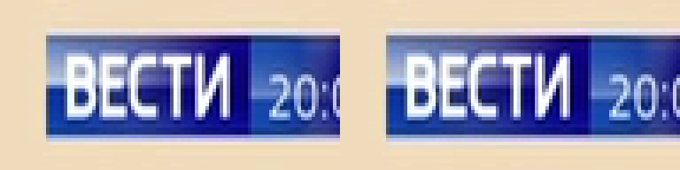
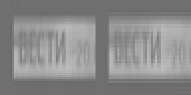

ProRes chroma conversion in the script
_FieldBased, so an interlaced 4:2:0 source keeps each
field's chroma. FFmpeg's -pix_fmt used to mix the two fields' chroma: on real interlaced
4:2:2 → 4:2:0 → 4:2:2 round trips this gains +11 dB chroma PSNR. Existing ProRes output
changes wherever a conversion happens (4:2:0, 4:1:1, 4:2:2 into 4444, and sources deeper than 10 bits).
Every one of those cases measured the same or better, and a source already in the profile's format is
bit-identical. The Color Format setting is now ignored for ProRes, as it is for v210, and the settings
dialog says so.
What was asked
Task 7 found that FFmpeg's automatic 4:2:0 → 4:2:2 conversion treats a woven interlaced frame as progressive and blends the fields' chroma, and moved v210's conversion into the script. ProRes still went through FFmpeg whenever the pipeline handed it 4:2:0: a DV PAL, DVD or DVB source left interlaced, with Color Format at "Match source". That is the usual archival job. This change extends the override to ProRes. Because that changes existing ProRes output, also for progressive sources (zimg's Bicubic instead of swscale), the change is measured here.
OLD is the previous behaviour: the script leaves the format alone (or applies the Color
Format selection), and FFmpeg's -pix_fmt pin produces the profile's format. NEW:
the script converts to the profile's format itself (resize.Bicubic, with
_FieldBased set when the clip is still interlaced). The pin then converts nothing. Both run
through the same vspipe → FFmpeg pipe as the worker.
Findings
M1 · Synthetic: one colour per field
The heavy test's fixture: an interlaced 4:2:0 frame whose top field has U = 90 and bottom field U = 240 (8-bit). U rows 100…111 of the output, 10-bit, where the correct answer is 360, 960, 360, 960…
| Path | OLD | NEW |
|---|---|---|
| 4:2:0 → 4:2:2 (raw) | 454 454 866 866 454 454 866 866… | 360 960 360 960 360 960… |
| 4:2:0 → 4:4:4 (raw) | 454 454 866 866… | 360 960 360 960… |
| ProRes Proxy, decoded | 459 459 858 858 462 462 861 861… | 360 960 360 960… |
| ProRes 422 HQ, decoded | 454 454 866 866… | 360 960 360 960… |
| ProRes 4444, decoded | 454 454 866 866… | 360 960 360 960… |
A synthetic worst case: fully saturated, opposite colours per field. In real footage the error appears only where the two fields' chroma differs, which means moving edges.
M2 · Real interlaced 4:2:0
With a ground truth: interlaced_test.avi (interlaced 4:2:2) is subsampled
to 4:2:0 per field with MPEG-2 siting, the way a DVD or DVB encoder would, and then converted
back to 4:2:2 both ways. The result is compared with the original 4:2:2 (10-bit units).
| Path | U PSNR | V PSNR | U max |d| | V max |d| |
|---|---|---|---|---|
OLD (FFmpeg -pix_fmt) | 38.49 dB | 41.94 dB | 207 | 79 |
NEW (script, _FieldBased=2) | 49.45 dB | 52.69 dB | 57 | 48 |
| NEW, but the clip is not marked interlaced | 38.54 dB | 41.96 dB | 206 | 79 |
OLD through ProRes 422 HQ (+ildct) | 38.55 dB | 42.03 dB | 209 | 78 |
NEW through ProRes 422 HQ (+ildct) | 49.11 dB | 52.15 dB | 58 | 47 |
The gain depends on the clip being marked field-based. The script marks it when deinterlacing is on or
a field order was detected (ScriptGenerator::field_based_for). An interlaced source whose order
is not detected gets the old result, no worse.
Limits: PSNR against a re-subsampled ground truth measures the round trip, not perceived quality, and our own per-field 4:2:0 step is part of what is measured.
Without a ground truth: pal-dvbt-fieldcoded-25i.ts (a real DVB-T capture,
interlaced 4:2:0). OLD and NEW differ by U 49.98 dB / V 52.32 dB on average, with up to 88 / 91 (10-bit)
at single samples. The differences sit on moving coloured edges. The figures below show the block where
OLD and NEW differ most:

Figure 1. The DVB-T frame, 96x48 crop at the largest OLD/NEW chroma difference, 4x nearest-neighbour. Left OLD, right NEW. OLD's blue box has a lighter band along its top edge, where one field's chroma has bled into the other.

Figure 2. The U plane of the same block (48x48 chroma samples, 4x). Left OLD, right NEW. NEW keeps the box's top and bottom edges as sharp in chroma as the fields carry them. OLD smears them over two chroma rows. No ground truth exists for this clip, so this shows where the two differ, not which is right. M2's ground-truth case answers that.
M3 · Progressive 4:2:0: interpolation only
With no fields involved, the change is zimg's Bicubic against swscale's default. Ground-truth round trips, 10-bit units:
| Case | Path | U PSNR | V PSNR |
|---|---|---|---|
pal-sd-25.mov 4:2:2 → 4:2:0 → 4:2:2 | OLD | 48.71 dB | 45.44 dB |
| NEW | 49.23 dB | 45.99 dB | |
| OLD vs NEW | 71.85 dB | 67.78 dB | |
| ProRes 4444 fixture 4:4:4 → 4:2:0 → 4:4:4 | OLD | 34.04 dB | 31.05 dB |
| NEW | 37.15 dB | 34.02 dB |
The 4:2:2 case barely moves (OLD and NEW are within 0.04 levels on average, max 9). Upsampling 4:2:0 to 4:4:4 gains about 3 dB. Chroma siting was not measured separately; it would show up here as a PSNR loss, and NEW is ahead in both cases.
M4 · Already in the profile's format: untouched
pal-sd-25.mov (10-bit 4:2:2) into ProRes 422 HQ with "Match source": the script's
output and the decoded ProRes are bit-identical OLD vs NEW (MD5 1b1bc05e… raw,
b2d4a79f… decoded). The conversion block is guarded by clip.format.id != target,
so it does nothing here. This is the common ProRes-to-ProRes job.
M5 · 4:2:2 into ProRes 4444
| Case | Path | U PSNR | V PSNR |
|---|---|---|---|
| ProRes 4444 fixture 4:4:4 → 4:2:2 → 4:4:4 | OLD | 34.19 dB | 31.27 dB |
| NEW | 37.57 dB | 34.60 dB |
On pal-sd-25.mov (4:2:2, no ground truth) OLD and NEW differ by 41.3 / 42.9 dB: a visible
but small interpolation difference, in NEW's favour wherever a ground truth exists.
M6 · Deeper than 10 bits
RMS error against the deep source, in 10-bit units (the ideal is quantisation alone):
| Source | Path | Y rms | U rms | V rms | max |
|---|---|---|---|---|---|
| ProRes 4444 (decodes 12-bit) | OLD | 0.153 | 0.219 | 0.215 | 0.750 |
| NEW | 0.132 | 0.182 | 0.180 | 0.750 | |
| 16-bit 4:2:2 gradient | OLD | 0.413 | 0.408 | 0.409 | 0.984 |
| NEW | 0.339 | 0.333 | 0.332 | 0.953 |
The plan's decision point was whether zimg's error-diffusion dither hurts at a 10-bit target. It doesn't: the error is lower and the maximum stays within one 10-bit step. The dither is unchanged.
M7 · An 8-bit Color Format selection
Previously, a ProRes job with "4:2:0 (8-bit)" selected was reduced to 8 bits in the script and padded back to 10 by FFmpeg. On the 16-bit gradient: OLD's Y RMS error is 1.358 (max 3.98, 0% of luma samples off the 8-bit grid). NEW ignores the selection: 0.339 (max 0.98), 75% of samples between 8-bit steps.
pal-sd-25.mov itself carries 8-bit content in a 10-bit container (0% off
the 8-bit grid in the source), which is why the gradient is used here.
M8 · Speed
1080i 4:2:0, 100 frames into ProRes 422 HQ: OLD 25.8 fps, NEW 28.0 fps. That is one run each, within run-to-run noise. The conversion costs nothing measurable next to the encode.
Decisions
- One statement of the stored format.
VideoCodec::fixed_output_format(DartfixedOutputFormat) is v210 → 4:2:2 10-bit, and ProRes by profile number (≥ 4 → 4:4:4).effective_chroma_subsamplingis that, or the selection.forced_pix_fmtstill pins the same format as a guard, andfixed_output_format_agrees_with_the_pinasserts they agree. - The Color Format selection is ignored for ProRes.
proresChromaPinWarningandv210ChromaPinWarningnow share one body. They say the selection is ignored, that a 4:4:4 source loses chroma in a 4:2:2 profile, or that a narrower source is padded into 4444. The selection no longer reaches the encode, so loss and padding are judged from the source alone. Both are pinned row for row to the worker's tables (prores_converts_to_its_profile_format_whatever_is_selected,v210_stores_422_10_whatever_is_selected). - The bit-depth warning is silent for ProRes. Otherwise every ProRes 4444 source (decoded as 12-bit) would warn "12-bit to 10-bit, choose Match source" on every ProRes job, advice that does not apply.
Verification
integration_v210_output_test.dart(heavy): "keeps each field's chroma" now runs for v210, ProRes Proxy, 422 HQ and 4444 (rows exactly 360/960,fiel 0x0209), and a ProRes HQ preview of interlaced 4:2:0 matches the encode (meanAbsDiff 0.000).test_223(Rust): both scripts convert to the profile's format, afterSetFieldBased, for every ProRes codec × every selection, with no second conversion.- Script-generation coverage in
integration_filter_parameters_test.dart(push gate), and unit tables inprores_chroma_pin_warning_test.dart,v210_test.dartandpixel_format_test.dart.
Not tested
- Windows and Linux. The conversion is zimg in VapourSynth on every platform, so nightly's heavy run is the check there.
- Perceived quality on a broad set of real footage: one real interlaced clip with a ground truth, one without.
Reproduce
SCRATCH=/path/to/scratch docs/reports/2026-11-prores-script-chroma/scripts/probe.sh
It needs the deps bundle (deps/macos-arm64, or DEPS=…), writes only under
$SCRATCH apart from regenerating img/, and prints every number above.
planes.py does the plane arithmetic in plain Python; convert.vpy is the NEW
conversion, the same resize call as the templates' block.